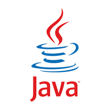

C#

A great multipurpose language. C# is for back end web development, video games and business applications. This like Java is one of the more structured verbose languages.It's a very pragmatic choice.
C#
A great web language. Java is for back end web development and business applications. This like C# is one of the more structured verbose languages. It's a very pragmatic choice.
Haskell
Mostly used in the finance industry, academia and obscure scientific projects. This is a language for people who can plan ahead. There are a lot of tough concepts to learn before you can even begin to use this language.
Lisp
Mostly used for artificial intelligence or as a hobby language. This is a great way to learn about the concepts of programming since it's a wildly flexibly and fun language that allow you to implement just about any programming paradigm.
Python

Generally used for scientific application or for web backends. This is a great language for creating simple automation scripts or as an alternative to bash. This is a scripting language so it's often more flexible and easier to get into than languages like C# or Java.
Ruby
Used mainly as a backend with the framework Ruby on Rails. This is an unusally fun and creative language. It has much of the flexibily of lisp but is much easier to use and has many interesting language constructs. This is a scripting language so it's often more flexible and easier to get into than languages like C# or Java.